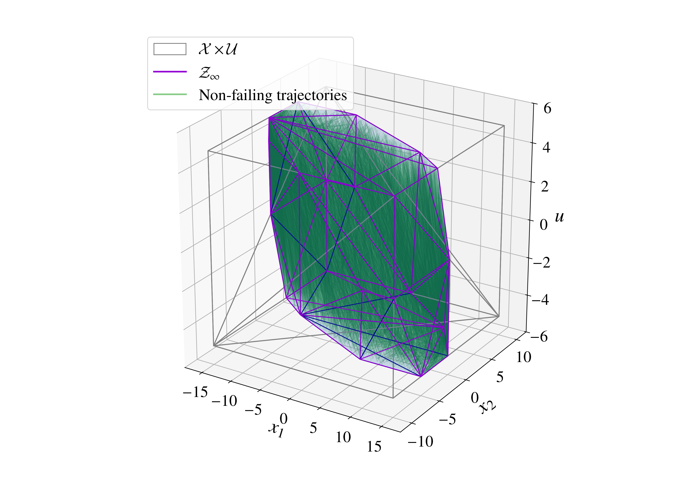

Learning From Failure
In this paper, we address the problem of computing maximal state-control invariant sets using failing trajectories. We introduce the concept of state-control invariance, which extends control invariance from the state space to the joint state-control space. The maximal state-control invariant (MSCI) set simultaneously encodes the maximal control invariant set (MCI) and, for each state in the MCI, the set of control inputs that preserve invariance. We prove that the state projection of the MSCI is the MCI and the state-dependent sections of the MSCI are the admissible invariance-preserving inputs. Building on this framework, we develop a Failure-Aware Iterative Learning (FAIL) algorithm for deterministic linear time invariant systems with polytopic constraints. The algorithm iteratively updates a constraint set in the state-control space by learning predecessor halfspaces from one-step failing state-input pairs, without knowing the dynamics. For each failure, FAIL learns the violated halfspaces of the predecessor of the constraint set by a regression on failing trajectories. We prove that the learned constraint set converges monotonically to the MSCI. Numerical experiments on a double integrator system validate the proposed approach.

Contributors
Ahmad Amine, Nick-Marios T. Kokolakis, Ugo Rosolia, Truong X. Nghiem, Rahul Mangharam